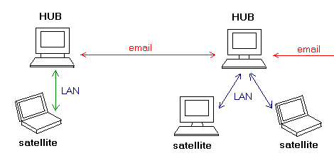

Local Network Collaboration
(This feature is not available in Code Co-op Lite)
Planning LAN Collaboration
Here are things to remember when setting up network collaboration:
- You don't need a server. There is no central repository. Project data are replicated on each computer.
- You have to designate one computer on the LAN as a Hub for script distribution (it is not a server). All scripts on the network will be routed through the Hub.
- All other machines on the network are the satellites of this Hub
- The Hub may use email to communicate with other Hubs or with email peers
- A good choice for a Hub is a machine that is on most of the time

< Back Next: Coollaboration Wizard >